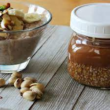

Blackberry Dump Cake

Description
The best make-ahead breakfast! Full of fiber and protein will keep you full all morning. Keeps in the fridge for up to a week.
Keeps in the fridge for up to a week.
Ingredients
- 3 cups water
- ½ cup quinoa
- ½ cup steel-cut oats
- 2 tablespoons almond meal
- 2 tablespoons flaxseed meal
- 1 tablespoon ground cinnamon
Steps
- Bring water to a boil in a saucepan; add quinoa and oats. Simmer, stirring frequently, until water is absorbed and quinoa is tender, 15 to 20 minutes.
- Stir almond meal and flaxseed meal into quinoa mixture; pour into a glass container and top with cinnamon. Let cool, about 15 minutes. Transfer to the refrigerator.